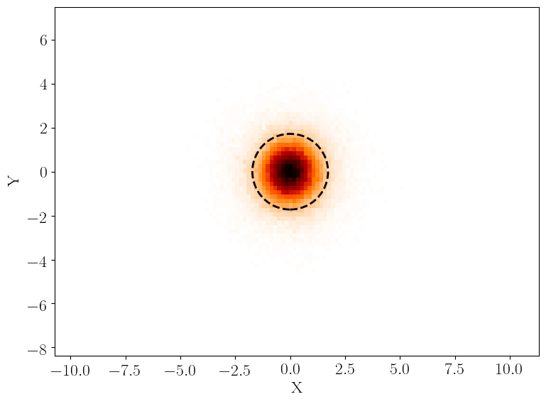
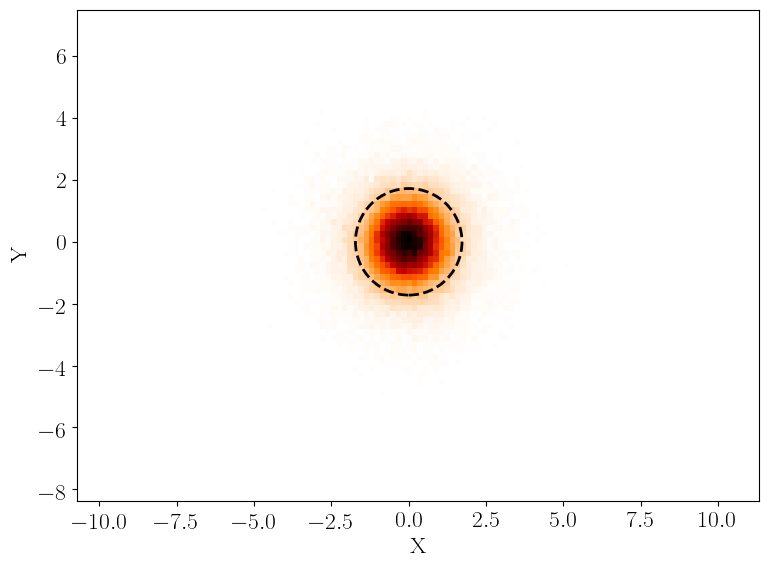
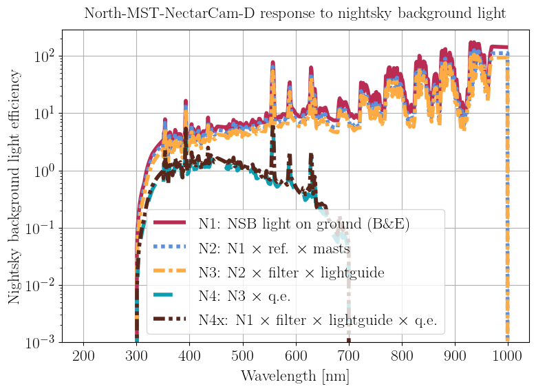
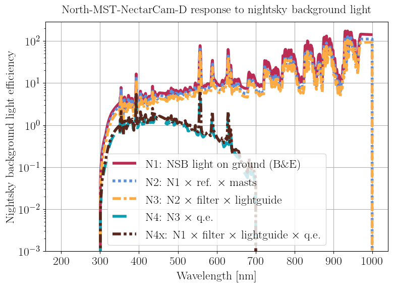
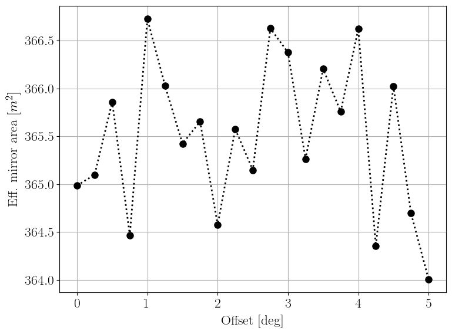
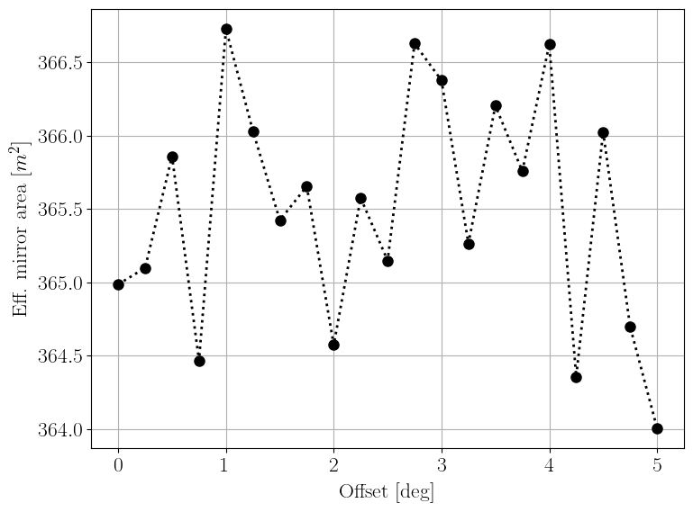

Applications¶
Applications are python scripts built on the API that execute a well defined task.
Applications are the building blocks of Simulation System Workflows.
Application scripts can be found in simtools/applications.
Important: depending on the installation type, applications are named differently:
developers (see Installation for Developers) call applications as described throughout this documentation:
python applications/<application name> ....users (see Installation for Users) call applications directly as command line tool. Applications names
simtools-<application name(with all_replaced by-)
Each application is configured as described in Configuration.
The available arguments can be access by calling the python applications/<application name> --help.
Some applications require one or multiple file names as input in the command line. The system will first search on main simtools directory for these files, and in case it is not found, it will search into the directories given by the config parameter model_path.
Output files of applications are written to $output_path/$label, where output_path is a config parameter and label is the name of the application. The plots produced directly by the application are stored in the sub-directory application-plots. High-level data produced intermediately (e.g PSF tables) can be found in the sub-directories relative to the specific type of application (e.g ray-tracing for optics related applications, camera-efficiency for camera efficiency applications etc). All files related to the simulation model (e.g, sim_telarray config files) are stored in the sub-directory model.
add_file_to_db¶
Summary¶
This application adds a file to a DB.
The name and location of the file are required. This application should complement the ones for updating parameters, adding entries to the DB and getting files from the DB.
Command line arguments¶
- file_name (str or list of str, required)
Name of the file to upload including the full path. A list of files is also allowed, in which case only one -file_name is necessary, i.e., python applications/add_file_to_db.py -file_name file_1.dat file_2.dat file_3.dat If no path is given, the file is assumed to be in the CWD.
- input_path (str, required if file_name is not given)
A directory with files to upload to the DB. All files in the directory with a predefined list of extensions will be uploaded.
- db (str)
The DB to insert the files to. The choices are either the default CTA simulation DB or a sandbox for testing.
- verbosity (str, optional)
Log level to print (default=INFO).
Example¶
uploading a dummy file.
simtools-add-file-to-db --file_name test_application.dat --db test-data
Expected final print-out message:
INFO::get_file_from_db(l75)::main::Got file test_application.dat from DB test-data and
saved into .
compare_cumulative_psf¶
Summary¶
This application simulates the cumulative PSF and compare with data (if available).
The telescope zenith angle and the source distance can be set by command line arguments.
The measured cumulative PSF should be provided by using the command line argument data. A file name is expected, in which the file should contains 3 columns: radial distance in mm, differential value of photon intensity and its integral value.
The MC model can be changed by providing a yaml file with the new parameter values using the argument pars (see example below).
Examples of the plots generated by this applications are shown below. On the left, the cumulative PSF and on the right, the simulated PSF image.
 

{kind=link}
Command line arguments¶
- site (str, required)
North or South.
- telescope (str, required)
Telescope model name (e.g. LST-1, SST-D, …).
- model_version (str, optional)
Model version (default=prod4).
- src_distance (float, optional)
Source distance in km (default=10).
- zenith (float, optional)
Zenith angle in deg (default=20).
- data (str, optional)
Name of the data file with the measured cumulative PSF.
- pars (str, optional)
Yaml file with the new model parameters to replace the default ones.
- test (activation mode, optional)
If activated, application will be faster by simulating fewer photons.
- verbosity (str, optional)
Log level to print (default=INFO).
Example¶
LST-1 Prod5
Runtime < 1 min.
Get an example dataset from the DB:
simtools-get-file-from-db --file_name PSFcurve_data_v2.txt
Run the application:
simtools-compare-cumulative-psf --site North --telescope LST-1 --model_version prod5 --data PSFcurve_data_v2.txt
The output is saved in simtools-output/compare_cumulative_psf
Expected final print-out message:
d80 in cm = 3.3662565358159013
Todo
Change default model to default (after this feature is implemented in db_handler)
derive_mirror_rnda¶
Summary¶
Derive the simulation model parameter mirror_reflection_random_angle (sometimes called mirror roughness) to match the measured containment diameter of the optical point-spread function (PSF) of individual mirror panels.
Description¶
This application derives the value of the simulation model parameter mirror_reflection_random_angle using measurements of the focal length and PSF of individual mirror panels.
PSF measurements are provided by one of the following options:
mean and sigma value obtained from the measurement of containment diameters of a number of mirror panels in cm (
--psf_measurement_containment_meanand--psf_measurement_containment_sigma)file (table) with measured PSF for each mirror panel spot size (
--psf_measurement)
The containment fraction used for the PSF diameter calculation is set through the argument --containment_fraction (typically 0.8 = 80%).
Mirror panels are simulated individually, using one of the following options to set the mirror panel focal length:
file (table) with measured focal lengths per mirror panel (provided through
--mirror_list)randomly generated focal lengths using an expected spread (value given through
--random_flen) around the mean focal length (provided through the Model Parameters DB). This option is switched with--use_random_flen.
The tuning algorithm requires a starting value for the random reflection angle. This is either
taken from the Model Parameters DB (default) or can be set using the argument --rnda.
Ray-tracing simulations are performed for single mirror configurations for each mirror given in the mirror_list. The mean simulated containment diameter for all the mirrors is compared with the mean measured containment diameter. The algorithm defines a new value for the random reflection angle based on the sign of the difference between measured and simulated containment diameters and a new set of simulations is performed. This process is repeated until the sign of the difference changes, meaning that the two final values of the random reflection angle brackets the optimal. These two values are used to find the optimal one by a linear interpolation. Finally, simulations are performed by using the interpolated value, which is defined as the desired optimal.
The option --no_tuning can be used if one only wants to simulate one value for the random reflection angle and compare the results with the measured ones.
Results of the tuning are plotted. See examples of the PSF containment diameter D80 vs random reflection angle plot, on the left, and the D80 distributions (per mirror panel), on the right.


This application uses the following Simulation Software tools:
sim_telarray/bin/sim_telarray
sim_telarray/bin/rx (optional)
Command line arguments¶
- telescope (str, required)
Telescope name (e.g. North-LST-1, South-SST-D, …)
- model_version (str, optional)
Model version (default=’Current’)
- psf_measurement (str, optional)
Table with results from PSF measurements for each mirror panel spot size
- psf_measurement_containment_mean (float, required)
Mean of measured containment diameter [cm]
- psf_measurement_containment_sigma (float, optional)
Std dev of measured containment diameter [cm]
- containment_fraction (float, required)
Containment fraction for diameter calculation (default: 0.8)
- rnda (float, optional)
Starting value of mirror_reflection_random_angle [deg]. If not given, the value from the default model is read from the simulation model database.
- mirror_list (file, optional)
Table with mirror ID and panel radius.
- use_random_flen (activation mode, optional)
Use random focal lengths, instead of the measured ones. The argument random_flen can be used to replace the default random_focal_length from the model.
- random_flen (float, optional)
Value of the random focal lengths to replace the default random_focal_length. Only used if use_random_flen is activated.
- no_tuning (activation mode, optional)
Turn off the tuning - A single case will be simulated and plotted.
- test (activation mode, optional)
If activated, application will be faster by simulating only few mirrors.
- verbosity (str, optional)
Log level to print (default=INFO).
Example¶
Derive mirror random reflection angle for a mid-sized telescope (MST), simulation production Prod5.
simtools-derive-mirror-rnda \
--site North \
--telescope MST-FlashCam-D \
--containment_fraction 0.8 \
--mirror_list MLTdata-preproduction.ecsv \
--psf_measurement MLTdata-preproduction.ecsv \
--rnda 0.0063 \
--test
Runtime about 4 min.
The output is saved in simtools-output/derive_mirror_rnda.
Use the parameter --output_path to change the output directory.
Expected final print-out message:
Measured D80:
Mean = 1.403 cm, StdDev = 0.163 cm
Simulated D80:
Mean = 1.404 cm, StdDev = 0.608 cm
mirror_random_reflection_angle
Previous value = 0.006300
New value = 0.004975
get_file_from_db¶
Summary¶
Get a file from the DB.
The name of the file is required. This application complements the ones for getting parameters, adding entries and files to the DB.
Command line arguments¶
- file_name (str or list of str, required)
Name of the file to get including its full directory. A list of files is also allowed. i.e., python applications/get_file_from_db.py -file_name mirror_CTA-N-LST1_v2019-03-31.dat.
- output_path (str)
Name of the local output directory where to save the files. Default it $CWD.
- verbosity (str, optional)
Log level to print (default=INFO).
Example¶
getting a file from the DB.
simtools-get-file-from-db --file_name mirror_CTA-N-LST1_v2019-03-31.dat
Expected final print-out message:
INFO::get_file_from_db(l82)::main::Got file mirror_CTA-N-LST1_v2019-03-31.dat from DB CTA-Simulation-Model and saved into .
get_parameter¶
Summary¶
Get a parameter entry from DB for a specific telescope or a site. The application receives a parameter name, a site, a telescope (if applicable) and optionally a version. It then prints out the parameter entry. If no version is provided, the value of the current model is printed..
Command line arguments¶
- parameter (str, required)
Parameter name
- site (str, required)
South or North.
- telescope (str, optional)
Telescope model name (e.g. LST-1, SST-D, …)
- log_level (str, optional)
Log level to print (default=INFO).
Raises¶
KeyError in case the parameter requested does not exist in the model parameters.
Example¶
Get the mirror_list parameter from the DB.
simtools-get-parameter --parameter mirror_list --site North --telescope LST-1 --model_version prod5
Expected final print-out message:
{'Applicable': True,
'File': True,
'Type': 'str',
'Value': 'mirror_CTA-N-LST1_v2019-03-31.dat',
'Version': '2020-06-28',
'_id': ObjectId('608834f257df2db2531b8e78'),
'entry_date': datetime.datetime(2021, 4, 27, 15, 59, 46, tzinfo=<bson.tz_util.FixedOffset object at 0x7f601dd51d80>)}
make_regular_arrays¶
Summary¶
This application creates the layout array files (ECSV) of regular arrays with one telescope at the center of the array and with 4 telescopes in a square grid. These arrays are used for trigger rate simulations.
The array layout files created should be available at the data/layout directory.
Command line arguments¶
- verbosity (str, optional)
Log level to print (default=INFO).
Example¶
Runtime < 10 s.
simtools-make-regular-arrays
The output is saved in simtools-output/make_regular_arrays.
Expected final print-out message:
INFO::layout_array(l608)::export_telescope_list::Exporting telescope list to /workdir/exter nal/simtools/simtools-output/make_regular_arrays/layout/telescope_positions-North-4LS T-corsika.ecsv
plot_simtel_histograms¶
Summary¶
This application plots and prints sim_telarray histograms into pdf file. It accepts multiple lists of histograms files that are plot together, side-by-side. Each histogram is plotted in a page of the pdf.
Command line arguments¶
- file_lists (str, required)
Text file containing the list of sim_telarray histogram files to be plotted. Multiple text files can be given.
- figure_name (str, required)
File name for the pdf output (without extension).
- verbosity (str, optional)
Log level to print (default=INFO).
Example¶
simtools-plot-simtel-histograms --file_lists list_test1.txt list_test2.txt --figure_name histograms_comparison
plot_layout_array¶
Summary¶
This application plots the layout array and saves into disk.
It accepts as input the telescope list file, the name of the layout, a sequence of arguments with the telescope files or a sequence of arguments with the layout names.
A rotation angle in degrees can be passed in case the array should be rotated before plotting. A sequence of arguments for the rotation angle is also permitted, in which case all of them are plotted and saved separately.
Command line arguments¶
- figure_name (str, optional)
File name for the pdf output.
- telescope_list (str, optional)
The telescopes file (.ecsv) with the array information.
- layout_array_name (str, optional)
Name of the layout array (e.g., North-TestLayout, South-TestLayout, North-4LST, etc.).
- rotate_angle (float, optional)
Angle to rotate the array before plotting (in degrees).
- show_tel_label (bool, optional)
Shows the telescope labels in the plot.
- verbosity (str, optional)
Log level to print (default=INFO).
Example¶
simtools-plot-layout-array --figure_name northern_array_alpha --layout_array_name North-TestLayout
print_array_elements¶
Summary¶
Convert and print a list of array element positions in different coordinate systems relevant for CTAO.
Description¶
This application converts a list of array element positions in different CTAO coordinate systems.
Available coordinate systems are:
UTM system
CORSIKA coordinates
Mercator system
Command line arguments¶
- array_element_list (str)
File name with list of array element positions (ecsv format)
- compact (str)
Compact output in requested coordinate system; possible are corsika,utm,mercator
- export (str)
Export array element list to file in requested coordinate system; possible are corsika,utm,mercator
- use_corsika_telescope_height (bool)
Use CORSIKA coordinates for telescope heights (requires CORSIKA observation level)
- select_assets (str)
Select a subset of array elements / telescopes (e.g., MSTN, LSTN)
Example¶
Print a list of array elements using a list of telescope positions in UTM coordinates.
simtools-print-array-elements \
--array_element_list tests/resources/telescope_positions-South-4MST.ecsv \
--compact corsika
Expected final print-out message:
telescope_name pos_x pos_y altitude
MST-01 -0.02 -0.00 2162.00
MST-02 1.43 151.02 2163.00
MST-03 -1.47 -151.02 2169.00
MST-04 150.72 73.57 2159.00
The following example converts a list of telescope positions in UTM coordinates and writes the output to a file in CORSIKA coordinates. Also selects only a subset of the array elements (telescopes; ignore calibration devices):
simtools-print-array-elements \
--array_element_list tests/resources/telescope_positions-North-utm.ecsv \
--export corsika --use_corsika_telescope_height \
--select_assets LSTN, MSTN, SSTN
Expected output is a ecsv file in the directory printed to the screen.
produce_array_config¶
Summary¶
This application is an example of how to produce sim_telarray config files for a given array.
All the input required has to be given as a yaml file by the command line argument array_config.
The required entries in the array_config file are:
‘site’: South or North
‘layout_name’: name of a valid layout array.
‘model_version’: name of a valid model version.
‘default’: telescope model names to be assigned to each telescope size by default. It must contain entries for ‘LST’ and ‘MST’ (and ‘SST’ in case of South site).
As optional data, specific telescope models can be assigned to individual telescopes. This is done by the entries with the name of the telescope (as used by the layout definition, ex. LST-01, MST-05, SST-10).
Each telescope model can be set in two ways.
a) A single str with the name of telescope model. Ex. ‘MST-05’: ‘NectarCam-D’
b) A dict containing a ‘name’ key with the name of the telescope model and further keys with model parameters to be changed from the original model. Ex.:
'MST-05': {
'name': 'NectarCam-D',
'fadc_pulse_shape': 'Pulse_template_nectarCam_17042020-noshift.dat',
'discriminator_pulse_shape': 'Pulse_template_nectarCam_17042020-noshift.dat'
}
This is an example of the content of an array_config file.
site: North,
layout_name: Prod5
model_version: Prod5
default:
LST: 'D234' # Design model for the LSTs
MST: FlashCam-D # Design model for the MST-FlashCam
LST-01: '1' # Model of LST-01 in the LaPalma site.
MST-05:
name: NectarCam-D
# Parameters to be changed
fadc_pulse_shape: Pulse_template_nectarCam_17042020-noshift.dat
discriminator_pulse_shape: Pulse_template_nectarCam_17042020-noshift.dat
Command line arguments¶
- label (str, optional)
Label to identify the output files/directories.
- array_config (str, required)
Path to a yaml file with the array config data.
- verbosity (str, optional)
Log level to print (default=INFO).
Example¶
North - Prod5, simple example
Get the array configuration from DB:
simtools-get-file-from-db --file_name array_config_test.yml
Run the application. Runtime < 1 min.
simtools-produce-array-config --label test --array_config array_config_test.yml
The output is saved in simtools-output/test/model.
Expected final print-out message:
INFO::array_model(l361)::export_simtel_array_config_file::Writing array config file into /workdir/external/simtools/simtools-output/test/model/CTA-TestLayout-North-2020-06- 28_test.cfg
production¶
Summary¶
This application perform array simulations.
The simulations are split into two stages: showers and array. Shower simulations are performed with CORSIKA and array simulations with sim_telarray. Note that either shower or array simulations are submitted (so typically you first run shower simulations, and then the array simulations).
By default the configuration is saved in simtools-output/test-production and the output in corsika-data and simtel-data. The location of the latter directories can be set to a different location via the option –data_directory.
A configuration file is required.
The workload management system used is given in the configuration file. Allowed systems are qsub (using gridengine), condor_submit (using HTcondor), and local (running the script locally).
Command line arguments¶
- productionconfig (str, required)
Path to the simulation configuration file.
- primary (str)
Name of the primary to be selected from the configuration file. In case it is not given, all the primaries listed in the configuration file will be simulated. The choices are: gamma, electron, proton, helium, nitrogen, silicon, and iron.
- task (str)
- What task to execute. Options:
simulate (perform simulations), file_list (print list of output files) inspect (plot sim_telarray histograms for quick inspection) resources (print quicklook into used computational resources)
- array_only (activation mode)
Simulates only array detector (no showers).
- showers_only (activation mode)
Simulates only showers (no array detector).
- test (activation mode, optional)
If activated, no job will be submitted, but all configuration files and run scripts will be created.
- data_directory (str, optional)
The location of the output directories corsika-data and simtel-data
- verbosity (str, optional)
Log level to print (default=INFO).
Example¶
Testing a mini-prod5 simulation.
Get the configuration file from the DB
simtools-get-file-from-db --file_name prod_config_test.yml
Run the application:
simtools-production --task simulate --productionconfig prod_config_test.yml --test --showers_only --submit_command local
The output is saved in simtools-output/test-production.
Expected final print-out message:
INFO::job_manager(l124)::_submit_local::Running script locally
INFO::job_manager(l133)::_submit_local::Testing (local)
sim_showers_for_trigger_rates¶
Summary¶
This application simulates showers to be used in trigger rate calculations. Arrays with one (1MST) or four telescopes (4LST) can be used, in case of mono or stereo trigger configurations, respectively.
Simulations are managed by the Simulator module. Each run is simulated in a job. Each job is submitted by using the submission command from the global config settings. The config entry extra_commands can be used to extra commands to be ran in each job, before the actual simulation.
At the moment, the shower simulations are performed by CORSIKA, which requires the zstd package. Please, make sure that the command to set your zstd path is properly set by the extra_commands in the command line configuration.
Command line arguments¶
- array (str, required)
Name of the array (1MST, 4LST …).
- site (str, required)
South or North.
- primary (str, required)
Name of the primary particle (proton, helium …).
- nruns (int, optional)
Number of runs to be simulated (default=100).
- nevents (int, optional)
Number of events simulated per run (default=100000).
- zenith (float, optional)
Zenith angle in deg (default=20).
- azimuth (float, optional)
Azimuth angle in deg (default=0).
- output (str, optional)
Path of the directory to store the output simulations. By default, the standard output directory defined by config will be used.
- test (activation mode, optional)
If activated, no job will be submitted. Instead, an example of the run script will be printed.
- verbosity (str, optional)
Log level to print (default=INFO).
Example¶
Producing a set of proton showers for trigger rate simulations of LST.
simtools-sim-showers-for-trigger-rates --array 4LST --site North --primary proton --nruns 2 --nevents 10000 --test --submit_command local
The output is saved in simtools-output/sim_showers_for_trigger_rates.
Expected final print-out message:
INFO::sim_showers_for_trigger_rates(l174)::main::List of log files exported to /workdir/external/simtools/simtools-output/sim_showers_for_trigger_rates/application- plots/log_files_proton.list
INFO::simulator(l646)::get_list_of_log_files::Getting list of log files
submit_data_from_external¶
Summary¶
Submit model parameter (value, table) through the command line.
Input data and metadata is validated, and if necessary enriched and converted following a predescribed schema.
Command line arguments¶
- input_meta (str, optional)
input meta data file (yml format)
- input (str, optional)
input data file
- schema (str, optional)
Schema describing the input data
Example¶
Submit mirror measurements with associated metadata:
simtools-submit-data-from-external --input_meta ./tests/resources/MLTdata-preproduction.meta.yml --input ./tests/resources/MLTdata-preproduction.ecsv --schema ./tests/resources/schema_MST_mirror_2f_measurements.yml --output_file TEST-submit_data_from_external.ecsv
Expected final print-out message:
INFO::model_data_writer(l70)::write_data::Writing data to /simtools/simtools-output/d-2023-07-31/TEST-submit_data_from_external.ecsv
tune_psf¶
Summary¶
This applications tunes the parameters mirror_reflection_random_angle, mirror_align_random_horizontal and mirror_align_random_vertical using cumulative PSF measurement.
The telescope zenith angle and the source distance can be set by command line arguments.
The measured cumulative PSF should be provided by using the command line argument data. A file name is expected, in which the file should contain 3 columns: radial distance in mm, differential value of photon intensity and its integral value.
The tuning is performed through a random search. A number of random combination of the parameters are tested and the best ones are selected based on the minimum value of the Root Mean Squared Deviation between data and simulations. The range in which the parameter are drawn uniformly are defined based on the previous value on the telescope model.
The assumption are:
mirror_align_random_horizontal and mirror_align_random_vertical are the same.
mirror_align_random_horizontal/vertical have no dependence on the zenith angle.
One example of the plot generated by this applications are shown below.

Command line arguments¶
- site (str, required)
North or South.
- telescope (str, required)
Telescope model name (e.g. LST-1, SST-D, …).
- model_version (str, optional)
Model version (default=”Current”).
- src_distance (float, optional)
Source distance in km (default=10).
- zenith (float, optional)
Zenith angle in deg (default=20).
- data (str, optional)
Name of the data file with the measured cumulative PSF.
- plot_all (activation mode, optional)
If activated, plots will be generated for all values tested during tuning.
- fixed (activation mode, optional)
Keep the first entry of mirror_reflection_random_angle fixed.
- test (activation mode, optional)
If activated, application will be faster by simulating fewer photons.
- verbosity (str, optional)
Log level to print (default=INFO).
Example¶
LST-1 Prod5
Runtime < 3 min.
Get PSF data from the DB:
simtools-get-file-from_db --file_name PSFcurve_data_v2.txt
Run the application:
simtools-tune-psf --site North --telescope LST-1 --model_version prod5 --data PSFcurve_data_v2.txt --plot_all --test
The output is saved in simtools-output/tune_psf.
Expected final print-out message:
Best parameters:
mirror_reflection_random_angle = 0.0043,0.08,0.0470
mirror_align_random_horizontal = 0.0047,28.,0.,0.
mirror_align_random_vertical = 0.0047,28.,0.,0.
validate_camera_efficiency¶
Summary¶
This application validate the camera efficiency by simulating it using the testeff program provided by sim_telarray.
The results of camera efficiency for Cherenkov (left) and NSB light (right) as a function of wavelength are plotted. See examples below.
 

{kind=link}
Command line arguments¶
- site (str, required)
North or South.
- telescope (str, required)
Telescope model name (e.g. LST-1, SST-D, …)
- model_version (str, optional)
Model version (default=’Current’)
- verbosity (str, optional)
Log level to print (default=INFO).
Example¶
MST-NectarCam - Prod5
Runtime < 1 min.
simtools-validate-camera-efficiency --site North --telescope MST-NectarCam-D --model_version prod5
The output is saved in simtools-output/validate_camera_efficiency.
Expected final print-out message:
INFO::validate_camera_efficiency(l118)::main::Plotted NSB efficiency in /workdir/external/ simtools/simtools-output/validate_camera_efficiency/application-plots/validate_camera _efficiency_MST-NectarCam-D_nsb
Todo
Change default model to default (after this feature is implemented in db_handler)
Fix the set_style. For some reason, sphinx cannot built docs with it on.
validate_camera_fov¶
Summary¶
This application calculate the camera FoV of the telescope requested and plot the camera as seen for an observer facing the camera.
An example of the camera plot can be found below.
Command line arguments¶
- site (str, required)
North or South.
- telescope (str, required)
Telescope model name (e.g. LST-1, SST-D, …)
- model_version (str, optional)
Model version (default=’Current’)
- camera_in_sky_coor (bool, optional)
Plot the camera layout in sky coordinates akin to looking at it from behind for single mirror telescopes (default=False)
- print_pixels_id (bool, optional)
Up to which pixel ID to print (default=50). To suppress printing of pixel IDs, set to zero (–print_pixels_id 0). To print all pixels, set to ‘All’.”
- verbosity (str, optional)
Log level to print (default=INFO).
Example¶
LST - Prod5
simtools-validate-camera-fov --site North --telescope LST-1 --model_version prod5
The output is saved in simtools-output/validate_camera_fov.
Expected final print-out message:
Saved camera plot in /workdir/external/simtools/simtools-output/validate_camera_fov /application-plots/validate_camera_fov_LST-1_pixel_layout.png
Todo
Change default model to default (after this feature is implemented in db_handler)
Fix the set_style. For some reason, sphinx cannot built docs with it on.
validate_optics¶
Summary¶
This application validates the optical model parameters through ray tracing simulations of the whole telescope, assuming a point-like light source. The output includes PSF (D80), effective mirror area and effective focal length as a function of the off-axis angle. The telescope zenith angle and the source distance can be set by command line arguments.
Examples of the plots generated by this application are shown below. On the top, the D80 vs off-axis is shown in cm (left) and deg (right). On the bottom, the effective mirror area (left) and the effective focal length (right) vs off-axis angle are shown.

 

{kind=link}

Command line arguments¶
- site (str, required)
North or South.
- telescope (str, required)
Telescope model name (e.g. LST-1, SST-D, …).
- model_version (str, optional)
Model version (default=’Current’).
- src_distance (float, optional)
Source distance in km (default=10).
- zenith (float, optional)
Zenith angle in deg (default=20).
- max_offset (float, optional)
Maximum offset angle in deg (default=4).
- offset_steps (float, optional)
Offset angle step size (default=0.25 deg)
- plot_images (activation mode, optional)
Produce a multiple pages pdf file with the image plots.
- test (activation mode, optional)
If activated, application will be faster by simulating fewer photons.
- verbosity (str, optional)
Log level to print (default=INFO).
Example¶
LST-1 Prod5
simtools-validate-optics --site North --telescope LST-1 --max_offset 1.0 --zenith 20 --src_distance 10 --test
The output is saved in simtools-output/validate_optics
Expected final print-out message:
INFO::ray_tracing(l434)::plot::Plotting eff_area vs off-axis angle
INFO::ray_tracing(l434)::plot::Plotting eff_flen vs off-axis angle
validate_schema_files¶
Summary¶
Validate parameter description files using a json schema file.
Command line arguments¶
- file_name (str)
input file to be validated
- schema (str)
schema file (jsonschema format) used for validation
Example¶
simtools-validate-schema-file --file_name tests/resources/MST_mirror_2f_measurements.schema.yml --schema jsonschema.yml